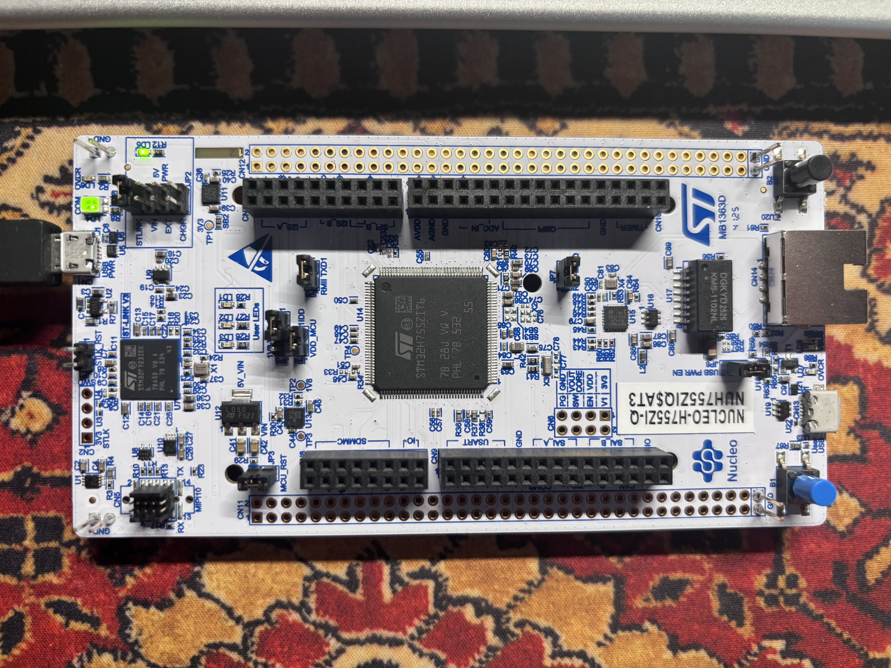
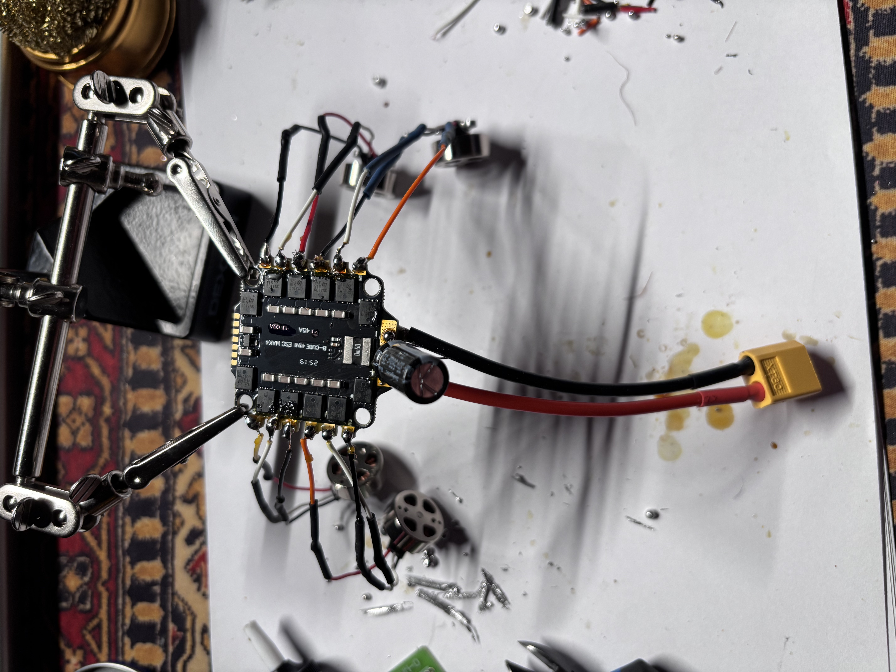

Test STM32

Dokonaliśmy pierwszych testów związanych z mikrokontrolerem STM32 NUCLEO H755ZI-Q.
Odpowiednio skonfigurowaliśmy STMkę za pomocą oprogramowania STM32CubeMX generując projekt testowy
w ramach którego sprawdziliśmy możliwości związane z kontrolą płytki.
Dopiero po przeprowadzeniu prostych testów kontynuowaliśmy dalsze działania projektowe.
Płytka ESC

Płytkę 4IN1 ESC wyposażyliśmy w źródło zasilania zabezpieczone kondensatorem w celu uchrony przed skokami napięcia
oraz dołączyliśmy do każdego z czterech portów silniczki BLDC 1503. Nie przeprowadzaliśmy testów z użyciem docelowego
akumulatora LiPo ze względu na opóźnioną dostawę bezpiecznika "smoke stopper", natomiast testy niższym napięciem wykazują
iż cały układ zachowuje się w sposób poprawny.
Testy czujników
ICM42688P
Udało nam się uzyskać połączenie między STM32 a czujnikiem otrzymując poprawny kod identyfikacyjny (tzw. "WHO_AM_I").
Dokonaliśmy kilku testów celem określenia możliwości danego czujnika potwierdzając tym samym jego planowaną użyteczność.
Żyroskop jest gotowy do aktywnego pilnowania poziomu drona w locie.
BMP390
Udało nam się uzyskać połączenie z czujnikiem i odczytać za jego pomocą ciśnienie.
Przeprowadziliśmy kilka prostych testów polegających na wertykalnej zmianie położenia czujnika
obserwując na ekranie komputera zmianę odczytywanych parametrów zgodnie z ruchem.
Potwierdza to całkowicie przewidywaną użyteczność czujnika w projekcie.
VL53L1X
Postanowiliśmy również zaopatrzeć się w laserowy czujnik odległości celem zwiększenia bezpieczeństwa prototypu
związanego ze strumieniem większej ilości danych na żywo. Uzyskaliśmy połączenie z czujnikiem
oraz przetestowaliśmy poprawność mierzonej odległości. Ten czujnik będzie kluczowy przy bezpiecznym
wykonaniu manewru lądowania by prototyp wiedział kiedy dotyka ziemi.